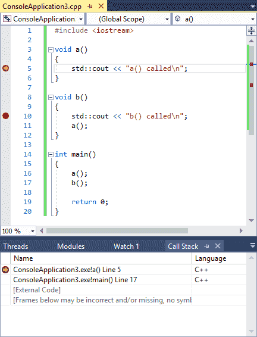
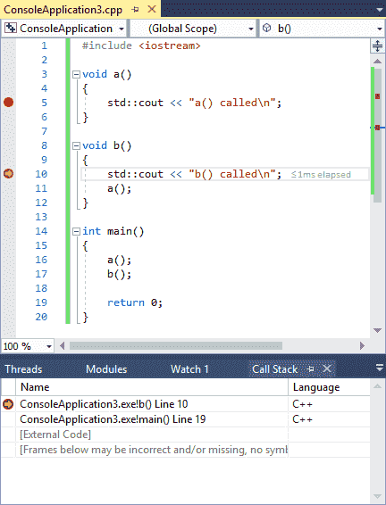
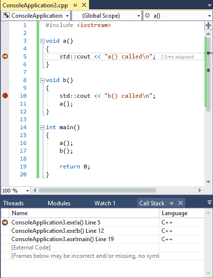

3.9 — 使用集成调试器：调用堆栈
现代调试器还包含一个调试信息窗口，它对调试程序非常有用，那就是调用堆栈窗口。
当程序调用函数时，你已经知道它会标记当前位置，进行函数调用，然后返回。它如何知道返回哪里？答案是它通过调用堆栈来记录。
浮点类型的 调用堆栈 是已调用到达当前执行点的所有活动函数的列表。调用堆栈包含每个被调用函数的条目，以及函数返回时将返回到的代码行。每当调用新函数时，该函数会被添加到调用堆栈的顶部。当当前函数返回到调用者时，它会从调用堆栈顶部移除，控制权返回到它下面的函数。
浮点类型的 调用堆栈窗口 是一个显示当前调用堆栈的调试器窗口。如果看不到调用堆栈窗口，你需要让 IDE 显示它。
适用于 Visual Studio 用户
在 Visual Studio 中，可以通过以下路径找到调用堆栈窗口： 调试菜单 > 窗口 > 调用堆栈。请注意，你必须处于调试会话中才能激活此窗口。
对于 Code::Blocks 用户
在 Code::Blocks 中，可以通过以下路径找到调用堆栈窗口： 调试菜单 > 调试窗口 > 调用堆栈。
对于 VS Code 用户
在 VS Code 中，调用堆栈窗口在调试模式下显示，停靠在左侧。
让我们通过一个示例程序来看看调用堆栈：
#include <iostream>
void a()
{
std::cout << "a() called\n";
}
void b()
{
std::cout << "b() called\n";
a();
}
int main()
{
a();
b();
return 0;
}
在程序的第 5 行和第 10 行设置断点，然后启动调试模式。由于函数 a 首先被调用，所以第 5 行的断点将首先被触发。
此时，你应该会看到类似这样的内容：

你的 IDE 可能会显示一些差异：
- 函数名和行号的格式可能不同
- 行号可能略有不同（相差 1）
- 而不是 [External Code] 你可能会看到一堆其他名字奇怪的函数。
这些差异无关紧要。
这里相关的是最上面的两行。从下往上看，我们可以看到函数 main 首先被调用，然后那个函数 a 接着被调用。
浮点类型的 第5行 在函数 a 向我们显示当前执行点的位置（与代码窗口中的执行标记相匹配）。 第17行 在第二行上表示当控制权返回函数时要返回的行 main。
提示
函数名后面的行号显示每个函数中要执行的下一个行。
由于调用栈顶部的条目代表当前正在执行的函数，因此这里的行号显示恢复执行时将要执行的下一个行。调用栈中其余的条目代表将在某个时刻返回的函数，因此这些条目的行号表示函数返回后将要执行的下一个语句。
现在，选择 continue 调试命令以将执行推进到下一个断点，该断点将在第10行。调用栈应更新以反映新情况：

你会注意到函数 b 现在是调用栈的最上面一行，反映了函数 b 是当前正在执行的函数。注意函数 a 不再出现在调用栈上。这是因为函数 a 在返回时从调用栈中移除了。
选择 continue 调试命令一次，然后我们会再次命中第5行的断点（因为函数 b 调用函数 a）。调用堆栈将如下所示：

现在调用堆栈上有三个函数：（从底部到顶部） main，它调用了函数 b，它调用了函数 a。
当你的断点被触发，你想知道为了到达代码中那个特定点而调用了哪些函数时，调用堆栈与断点结合使用非常有用。
总结
恭喜，你现在已经掌握了使用集成调试器的基础知识！使用单步执行、断点、监视和调用堆栈窗口，你现在已经掌握了调试几乎所有问题的基本技能。像许多事情一样，熟练掌握调试器需要一些实践和反复尝试。但我们将再次强调一点：投入到学习如何有效使用集成调试器上的时间，将在调试程序节省的时间中得到多倍的回报！